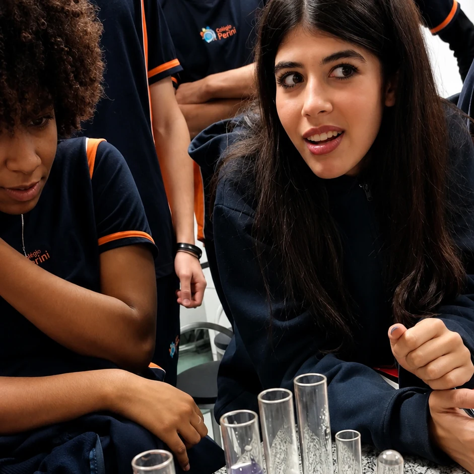

Preparação acadêmica
COC, avaliações e simulados.
Conhecimento, repertório e experiências se conectam para preparar o estudante para a universidade, para escolhas conscientes e para os próximos passos da vida.

Ao longo dos três anos, preparação acadêmica, experiências, projetos e acompanhamento ajudam o estudante a aprofundar conhecimentos, ampliar repertório e tomar decisões com mais consciência.
COC, avaliações e simulados.
Projetos, itinerários, tecnologia e aulas de campo.
Autonomia, educação financeira, cultura e cidadania.
A Formação Geral Básica, o Sistema COC, as avaliações e os simulados constroem uma preparação progressiva ao longo do Ensino Médio, com acompanhamento da aprendizagem e rotina de estudo.
O COC estrutura a preparação acadêmica. O Perini amplia essa formação com experiências, projetos, repertório e desenvolvimento humano.
Conhecimentos essenciais para aprofundar conteúdos e construir uma base acadêmica consistente.
Estrutura de ensino que organiza conteúdos, acompanha a aprendizagem e sustenta a preparação acadêmica.
Experiências de avaliação que ajudam o estudante a acompanhar sua evolução e desenvolver estratégia.
Contato com formatos, questões e competências que fazem parte da preparação para os próximos passos.
Adaptação à nova etapa, aprofundamento dos conteúdos e construção de uma rotina de estudo mais consistente.
Mais complexidade, novas experiências e participação cada vez mais ativa na própria aprendizagem.
Organização dos conhecimentos, estratégia e preparação para as decisões que vêm depois da escola.

Itinerários formativos, Ciências da Natureza, Tecnologias Digitais, aulas de campo e projetos interdisciplinares ampliam repertório e mostram diferentes formas de aplicar o conhecimento.
Aprender também envolve investigar, experimentar, produzir, relacionar áreas e compreender como o conhecimento pode ser aplicado em situações reais.
O Projeto Ligas conecta áreas, investigação e criação para transformar conhecimento em ação.
Escolhas futuras não se constroem de uma hora para outra. Ao longo do Ensino Médio, experiências acadêmicas, projetos e diferentes áreas de conhecimento ajudam o estudante a ampliar referências, reconhecer interesses e tomar decisões com mais consciência.
Educação financeira para decisões da vida real. O programa amplia a formação ao trabalhar planejamento, responsabilidade, autonomia e escolhas conscientes conectadas às situações do cotidiano.
Arte Cênica, projetos, experiências interdisciplinares e ações de formação de valores ajudam a ampliar a leitura de mundo e fortalecer participação, convivência e responsabilidade.
Nas experiências, nas escolhas e na forma como o estudante aprende a compreender o mundo e seu próprio caminho.
Conhecimento para avançar. Repertório para escolher. Experiências para crescer.